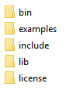
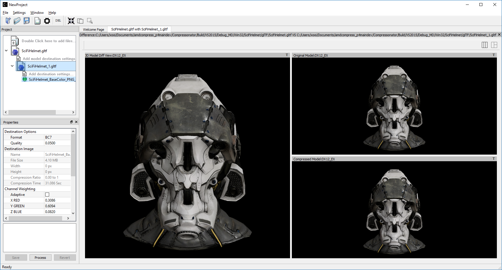

Revision History¶
For the latest documentation, please refer to: http://compressonator.readthedocs.io/en/latest/
V4.2¶
July 2021
Features
BC1 Quality Improvements
- Added new refine steps to improve quality of images with mixed low and high-frequency content.
- Boosted encoding performance by 2x with improved quality for smooth texture-mapped surfaces.
BC7 HLSL Improvements
- Bug fixes and improved overall quality of the shader.
GUI Update
- Added “Refine Steps” settings for BC1 image processing
- Removed “Use Alpha” and “No Alpha” setting for BC1, Just set a threshold above 0 to enable BC1 punch through ranges
SDK Updates
- Removed framework.h file, replaced with compressonator.h
- Added new kernel setting options for BCn codecs in CMP_Framework
- New single header shader files added for CPU-GPU common API’s and type definitions
- Added FidelityFX types to common_defs.h to support programming FidelityFX shaders with CMP type definitions
- Improved CompressonatorLib BC1 performance and quality
CMake Build Updates
- Added options to select build of external libs, SDK libs and applications
- Build updated for CLI on Mac OS
- OpenCV 4 supported
- Improved compiler standard revision detection and extensions
- Visual Studio 2019 support
- Qt 5.15 support
Known issues and limitations
- BC1 set to high-quality settings or with refinement steps take longer time to process than prior versions, adjust quality-settings lower if better performance is required
- Fixed quality issues for BC7 HLSL for images with alpha content, the processing time is longer than the previous release
- Global Setting of Refine Steps is only valid for BC1, it will not work for any other format settings.
V4.1¶
November 2020
Features
SNORM Support
GPU Encoding
Mip Map Generation
Image View
Test Analysis
-
A KTX version 2 plugin has been added to the SDK, that supports saving and loading multichannel images, BCn, ETCn, and ASTC codecs.
Known issues and limitations
- When using GPU encoding, all source image width and height must be divisible by 4.
- GPU HW based encoding feature is only available on the Windows platform. Encoding is set only for BCn codecs and quality is limited when compared to CPU encoding.
- BC6H is not supported with GPU HW based encoding.
- KTX2 file formats for ATIn and DXT5 swizzled formats are not supported.
- ATI1n, ATI2n processed images save as BC4 and BC5 formats.
- Transcoding to ARGB_16F, ARGB_32F, and ARGB_8888 image formats is supported, all other channel formats have various data issues and have been removed until a fix is available.
- Viewing glTF and OBJ models using Vulkan(TM) rendering shows blank views.
- PSNR and Image diff analysis for mismatched channel source and destination types (F16, F32, HalfFloat, and 8bit) needs improvement.
- BC6H for OpenCL is not available in this release.
- If user-requested MIP Map level generation for GPU texture sizes in the GUI and CLI applications are invalid, they will automatically be adjusted to the lowest settable limits.
- Limited CubeMap support.
V4.0¶
May 2020
Features
-
Supports GPU based encoding with OpenCL and DX11
-
(Beta Feature) Displays performance data for GPU and CPU based BC1 to BC7 encoders
-
The “process_results.txt” logging includes GPU performance analysis data. csv file format is also available.
-
Quality settings are available for BC1, BC2 and BC3 encoders.
Setting Global Quality Settings
Users can override all individual destination compression settings, using a globally set value before processing.
-
Compressonator SDK performs auto conversions of FP16 to byte and byte to FP16 formats when encoding textures with GPU or CPU encoders, a pre-conversion of the source data is performed, into a temporary buffer which is then sent for processing, once the processing is completed the buffer is removed.
Known issues and limitations
- GPU based encoding feature is only available on the Windows platform.
- When using GPU Encoding, all source image width and height must be divisible by 4.
- BC1, BC2 and BC3 DXC Performance is slow for quality setting > 0.6
- CMP_Core for BC1,BC2,BC3,BC4,BC5 is fully functional on both OpenCL and DX11.
- CMP_Core BC7 has limited support on OpenCL, in a few cases encoding images causes GPU and CLI application to become unresponsive.
- CMP_Core BC6 for OpenCL is not completed.
- BC6 & BC7 on DX11 uses DirectX Tex shaders, CMP_Core version will be available soon.
- GPU shaders for OpenCL and DX11 are compiled at runtime when encoding a texture for the first time, all subsequent runs use compiled shaders.
- KPerf(ms) and MTx/s are not measured for Compressonator SDK CPU encoding, only measured for CMP_Core SDK HPC-CPU and GPU encoding.
- KPerf(ms) and MTx/s measurements do not match across DXC and OCL pipelines.
- If user-requested MIP Map level generation for GPU texture sizes in the GUI and CLI applications are invalid, they will automatically be adjusted to the lowest settable limits.
- See v3.2 list for additional issues and limitations.
V3.2¶
December 2019
Features
-
Several new libraries are now provided with the SDK.
Compressonator Core Provides block level API access to updated performance and quality driven BCn codecs.
Compressonator Framework Includes Compressonator core with interfaces for multi-threading, mipmap generation, file access of images and HPC pipeline interfaces. (SPMD & GPU support is not enabled in this release)
Compressonator SDK Has been updated to support Cube Maps, MIP Map generation. External link requirement for Open EXR has been removed.
-
This release previews cube map support for images that are limited to RGBA_8888 format and RGBA_F16. Support for other formats will be provided in the next major update.
-
A analysis table view and results output are provided for users to view test analysis results for Performance, PSNR and SSIM analysis during and after processing of image textures.
Known issues and limitations
- HPC BC7 codec on Linux platforms shows block artifacts.
- HDR Cube maps (Format ARGB_16F) files have issues in the GUI view, only the first frame and MIP Level is displayed.
- Cube map only supports a limited set of texture types (RGBA_8888 and RGBA_F16), additional format will be added in future release.
- Cube maps with .KTX as destination format is not supported.
- When transcoding signed floats with BC6H HPC on unsigned RGBA_8888 data the images will appear distorted.
- CreateCodecBuffer (nCodecBufferType) case needs to create new codec buffers for CBT_RGBA8888, CBT_BGRA8888 and CBT_ARGB8888. The fix has been patched in this release.
- In GUI, ATI2N decode with CPU is swizzled. Decode views with GPU_OpenGL, GPU_DirectX and GPU_Vulkan are correct.
- MSE calculations are based on RGB channels only, alpha channel is not included. New MSE calculations based on MipSet data format for RGBA channels will be used in next release.
Notes
- BC5 codec uses ATI2N_XY (Red & Green) channel format if you prefer Green & Red for BC5 please use ATI2N format for encoding.
- In GUI, BC4 decode views using CPU is gray scaled based on Red channel. Next release will only use Red channel views to match GPU views.
V3.1¶
November 2018
Features
Fresh New Installers:
When installing to Windows with V3.1 release, you will notice that there are several separate new installers: SDK, GUI and CLI, which when all used result in the following file structure under \Program Files\Compressonator 3.1

The bin and license folders are created when the user installed GUI or CLI. When the SDK is installed, an examples folder is created which contains sample application source code demonstrating the use of the Compressonator SDK. These samples use the header files from the include folder and require linking with the prebuilt sample Compressonator library provided in the lib folder. Users can also build the Compressonator library using the source code from GPUOpen. Each of these installs will not remove prior v3.0 or older installations. The user should uninstall manually using the control panel “add remove programs”.
Texture Compression
BC6H: The quality of images varies slightly when processed with a CPU based encoder and decompressed by GPU compared to decompression by CPU, especially when generating MIP map levels with progressively lower resolution images. Our latest release compensates for these differences to reduce the errors that causes blocking artifacts and luminance changes.
ETC2_RGBA and ETC2_RGBA1 is added to Compressonator SDK, that controls the degree of transparency of images for ETC2 blocks.
CLI Options
Process Source and Destination Folders:
The new CLI adds support for processing image files from a folder, without the need to specify a file name. Using a file filter, specific files types can also be selected for compression as needed.
CLI will generate an output “process_results.txt” when -log is added to the compression command line options, users can change the default log file using the command -logfile, the log captures details of the source and destination files along with statistical data on performance and quality.
3D Model
Model Mesh Compression: Additional support for gltf 2.0 compression extensions (KHR_draco_mesh_compression) is added to CLI and GUI
Selectable 3D Model Viewers: Support for the Vulkan Viewer code introduced in 3.0 can now be set in GUI application settings, this is an alpha version and not expected to work for all glTF models, feature for this viewer compared to DX12 has been limited.
3D Model Image Diff Viewer, Auto and Manual View: This feature allows the user to select a manual override of the automated difference view of two rendered models. The Auto View switches render frames at a predetermined rate after two render cycles of each model view, the Manual View allows the users to manually switch view using the keyboards space bar.
Image Viewer.
Save View as: Users can capture viewed images to file using context menu “Save View as” to either DDS, BMP or EXR files
Save Block as: Users can now save any block to file using “Save Source Block … as” where … is the current cursor location translated to a block position.
Copy to Windows Clipboard: Users can capture images to Windows Clipboard, using keyboard keys Ctrl C (captures displayed image), Alt C (captures original source image).
Known issues and limitations
- After uninstalling the SDK or CLI, Windows short cuts for the tools folder references are not removed. When selecting them in the start menu Windows will prompt for removal.
- Vulkan Model Viewer, the code is a preview alpha version, it may cause GUI instability with various models!
V3.0¶
April 2018
V3.0 release will expand Compressonator assets processing from 2D to 3D. Please refer to Getting Started document (Section “Getting Started on 3D Mesh Processing”) if you wish to have a quick start on V3.0.
Features
- Optimize mesh (.obj model and .bin file from .glTF model) using vertex cache optimization, overdraw reduction and mesh simplification using level of details.
- Analyzing Mesh : Provide ACMR (Average Cache Miss Ratio) and ATVR (Average Transformed Vertices Ratio) statistic from mesh optimization to analyze mesh optimization only.
Compress mesh (support only .obj model) using Draco library.
Original Image View and Processed Image View (Compressed Image View or Pixels Difference Image View) can be switched with simple key stokes (O or P)
Known issues and limitations
- “Mesh optimization only support glTF and obj file format while mesh compression only support obj file format.
- Embedded gltf is not supported for now. Only gltf with external .bin mesh file is supported.
- .obj file texture load (with an external mtl file) and view is not supported.
- “AutoOpt” in the mesh optimization setting may not produce the best result, it is just a default setting which includes vertex cache optimization with cache size of 16, overdraw optimization with ACMR threshold 1.05 and vertex fetch optimization. The mesh optimization setting is model-dependent and depend on actual hardware. If result is not optimized, users are advised to use “UserOpt” setting and refer to Mesh Optimizer Settings for “UserOpt” selection to set each value manually or check/uncheck certain optimization.
- Mesh Optimization with all selected Mesh Optimizer Settings will need to work with mesh analyzing with the values set to match the hardware to get the optimum result.
- KTX 3 color channels multiple mip level may result in GUI crash and will be fix in next release.
V2.7¶
October 2017
Features
- Linux and Mac support- build with cmake and shell script
- Preview of 3D model viewer and asset compression
- Compress texture images within the glTF file.
- View 3D Models with DX12 using glTF v2.0 file format https://www.khronos.org/gltf
- Compare compressed model textures with original
Known issues and limitations
- “Drag and drop” does not work due to User Interface Privilege Isolation technology which forbid dragging from non-admin to admin, please relaunch the app without admin again if drag and drop does not work.
- glTF viewer is pre-mature and requires DX12 feature level 12, support only Win10 RS2 or later, also Window SDK 10.0.15063.0 is recommended for best functionality of the viewer.
- Decompress view with Vulkan only support up to driver version 1.5.0. Stay tune for update to support the latest driver.
- Some glTF view might appear zoom in or out. Please use the mouse wheel to zoom in/out for better view.

V2.5¶
October 2017
Features
- GUI updates includes
- Added support for HDR image view, a HDR properties window has been added to allow user adjust Exposure, Defog, Knee Low and Knee-High values.
- Added support for channel weight setting in destination setting window for compression codecs.
- Added support for alpha setting in destination setting window for BC1.
- Added option to select image view with GPU or CPU (decompress with GPU or CPU).
- GUI “Process” icon behavior has been changed for the convenience of
the users:
- “Process” icon has been enabled all the time even when users do not add any compression setting to the original images.
- Allow user to drag and drop multiple images and click “Process” right away, in which GUI will set the compression setting chosen by the users to all original images.
- Codecs updates includes
- ASTC
- ETC2
- Improved BC6H Compression quality
V2.4¶
December 2016
Features
- Improved performance of ASTC compression
- Performance adjusted according to quality settings
- Fast multi-threaded implementation Example: Boat.png sample image with Quality = 0.05 and BitRate = 8.0 over 40% faster for single threaded compression compare with v2.3 35x faster for multi threaded (8 threads on a 8 Core CPU) compression
- Support MipMap generation in KTX files
- Added TGA image plugin
- Added Vulkan GPU based decompression and viewing of compressed image
- 64-bit support added to Command Line and GUI applications
Known issues and limitations
- MipMap views is not supported in GPU based decompression
Bug Fixes and Changes
- GUI application no longer requires GPUOpen CodeXL components
- Replaced Progress Bar
- Replaced About Box
- Replaced Welcome Page
- Removed Crash Reports
- To build GUI and CLI applications from source, it is required to install Qt v5.7 first (Qt v5.5 in common folder is no longer required)
- The path setting for 32 and 64 bit Qt files is set in a shared VisualStudio project file Compressonator_RootDev.proj
- Fixed the problem of corrupted BlockRate values in GUI when loading project files and processing
- Fixed the corrupted image block problem when “BlockRate” width is not equal to height during ASTC CPU based decompression
- Added check on valid ASTC user input block size (WxH) parameter
- Fixed ATC_RGB channel swizzle
- Fixed missing decompressed image output to TGA file (replaced Qt plugins with Compressonator’s own TGA plugin)
V2.3¶
July 2016
Features
- Compatible with OpenGL’s GL_COMPRESSED_RGB8_ETC2 API
ASTC compression & decompression of various block sizes from 4x4 to 12x12
- Supported through OpenGL APIs
- Requires GPU HW supports ASTC format
Selectable GPU or CPU based compressed image views
- GPU rendering based on OpenGL or DirectX
- Enabled in Compression setting